Measurement
Chapter 3: Measurement
Section 3.1: Measuring Civilian Victimization during Wartime
## load data
data("afghan", package = "qss")
## summarize variables of interest
summary(afghan$age)## Min. 1st Qu. Median Mean 3rd Qu. Max.
## 15.00 22.00 30.00 32.39 40.00 80.00summary(afghan$educ.years)## Min. 1st Qu. Median Mean 3rd Qu. Max.
## 0.000 0.000 1.000 4.002 8.000 18.000summary(afghan$employed)## Min. 1st Qu. Median Mean 3rd Qu. Max.
## 0.0000 0.0000 1.0000 0.5828 1.0000 1.0000summary(afghan$income)## Length Class Mode
## 2754 character characterprop.table(table(ISAF = afghan$violent.exp.ISAF,
Taliban = afghan$violent.exp.taliban))## Taliban
## ISAF 0 1
## 0 0.4953445 0.1318436
## 1 0.1769088 0.1959032Section 3.2: Handling Missing Data in R
## print income data for first 10 respondents
head(afghan$income, n = 10)## [1] "2,001-10,000" "2,001-10,000" "2,001-10,000" "2,001-10,000"
## [5] "2,001-10,000" NA "10,001-20,000" "2,001-10,000"
## [9] "2,001-10,000" NA## indicate whether respondents' income is missing
head(is.na(afghan$income), n = 10)## [1] FALSE FALSE FALSE FALSE FALSE TRUE FALSE FALSE FALSE TRUEsum(is.na(afghan$income)) # count of missing values## [1] 154mean(is.na(afghan$income)) # proportion missing## [1] 0.05591866x <- c(1, 2, 3, NA)
mean(x)## [1] NAmean(x, na.rm = TRUE)## [1] 2prop.table(table(ISAF = afghan$violent.exp.ISAF,
Taliban = afghan$violent.exp.taliban, exclude = NULL))## Taliban
## ISAF 0 1 <NA>
## 0 0.482933914 0.128540305 0.007988381
## 1 0.172476398 0.190994916 0.007988381
## <NA> 0.002541757 0.002904866 0.003631082afghan.sub <- na.omit(afghan) # listwise deletion
nrow(afghan.sub)## [1] 2554length(na.omit(afghan$income))## [1] 2600Section 3.3: Visualizating the Univariate Distribution
Section 3.3.1: Bar Plot
par(cex = 1.5)
## a vector of proportions to plot
ISAF.ptable <- prop.table(table(ISAF = afghan$violent.exp.ISAF,
exclude = NULL))
ISAF.ptable## ISAF
## 0 1 <NA>
## 0.619462600 0.371459695 0.009077705## make barplots by specifying a certain range for y-axis
barplot(ISAF.ptable,
names.arg = c("No harm", "Harm", "Nonresponse"),
main = "Civilian victimization by the ISAF",
xlab = "Response category",
ylab = "Proportion of the respondents", ylim = c(0, 0.7))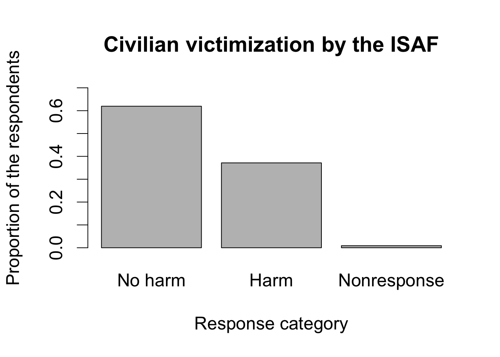
## repeat the same for the victimization by Taliban
Taliban.ptable <- prop.table(table(Taliban = afghan$violent.exp.taliban,
exclude = NULL))
barplot(Taliban.ptable,
names.arg = c("No harm", "Harm", "Nonresponse"),
main = "Civilian victimization by the Taliban",
xlab = "Response category",
ylab = "Proportion of the respondents", ylim = c(0, 0.7))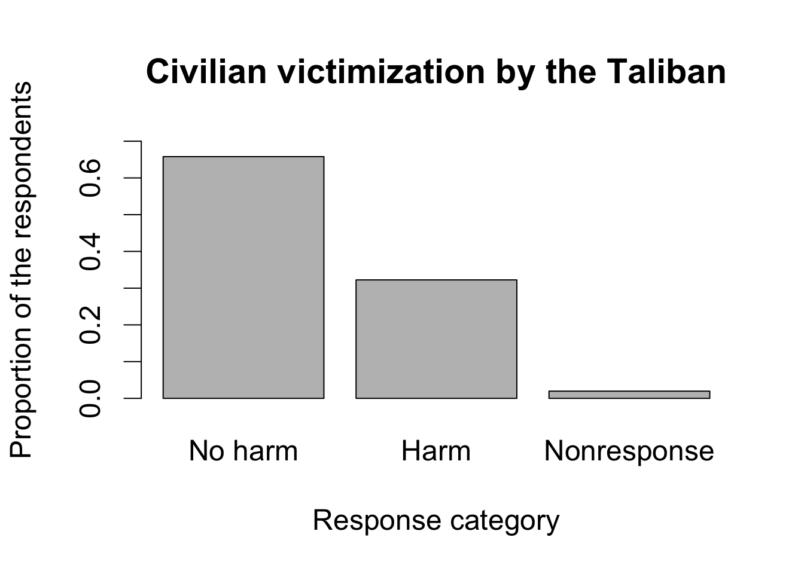
Section 3.3.2: Histogram
par(cex = 1.5)
hist(afghan$age, freq = FALSE, ylim = c(0, 0.04), xlab = "Age",
main = "Distribution of respondent's age")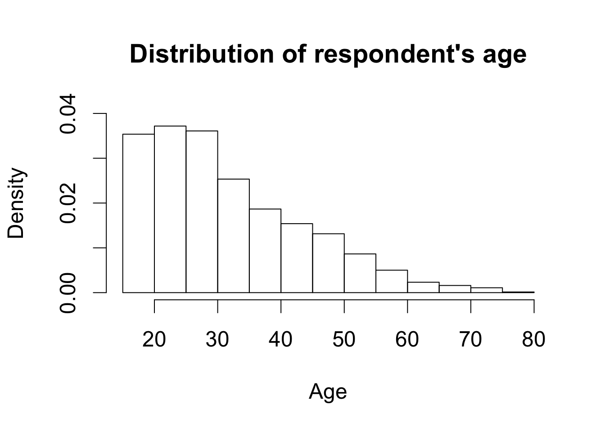
par(cex = 1.5)
## histogram of education. use `breaks' to choose bins
hist(afghan$educ.years, freq = FALSE,
breaks = seq(from = -0.5, to = 18.5, by = 1),
xlab = "Years of education",
main = "Distribution of respondent's education")
## add a text label at (x, y) = (3, 0.5)
text(x = 3, y = 0.5, "median")
## add a vertical line representing median
abline(v = median(afghan$educ.years))
## adding a vertical line representing median
lines(x = rep(median(afghan$educ.years), 2), y = c(0, 0.5))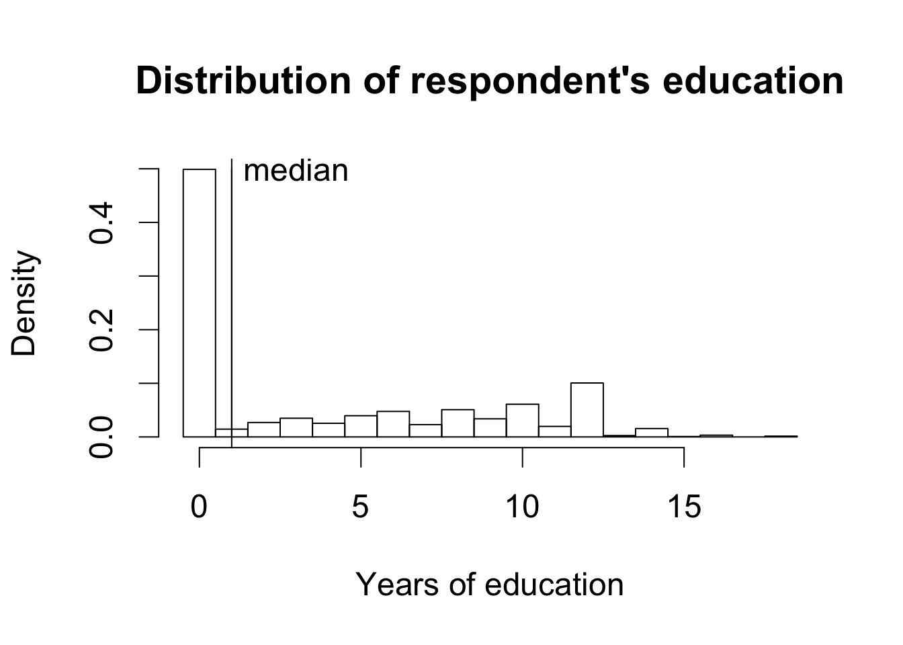
Section 3.3.3: Box Plot
par(cex = 1.25)
boxplot(educ.years ~ province, data = afghan,
main = "Education by province", ylab = "Years of education")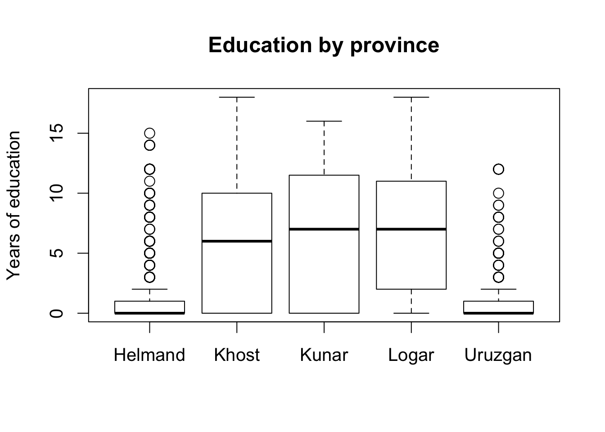
tapply(afghan$violent.exp.taliban, afghan$province, mean, na.rm = TRUE)## Helmand Khost Kunar Logar Uruzgan
## 0.50422195 0.23322684 0.30303030 0.08024691 0.45454545tapply(afghan$violent.exp.ISAF, afghan$province, mean, na.rm = TRUE)## Helmand Khost Kunar Logar Uruzgan
## 0.5410226 0.2424242 0.3989899 0.1440329 0.4960422## Saving or Printing a Graph
## pdf(file = "educ.pdf", height = 5, width = 5)
## boxplot(educ.years ~ province, data = afghan,
## main = "Education by Province", ylab = "Years of education")
## dev.off()
## pdf(file = "hist.pdf", height = 4, width = 8)
## ## one row with 2 plots with font size 0.8
## par(mfrow = c(1, 2), cex = 0.8)
## ## for simplicity omit the texts and lines from the earlier example
## hist(afghan$age, freq = FALSE,
## xlab = "Age", ylim = c(0, 0.04),
## main = "Distribution of Respondent's Age")
## hist(afghan$educ.years, freq = FALSE,
## breaks = seq(from = -0.5, to = 18.5, by = 1),
## xlab = "Years of education", xlim = c(0, 20),
## main = "Distribution of Respondent's Education")
## dev.off()Section 3.4: Survey Sampling
Section 3.4.1: The Role of Randomization
par(cex = 1.5)
## load village data
data("afghan.village", package = "qss")
## boxplots for altitude
boxplot(altitude ~ village.surveyed, data = afghan.village,
ylab = "Altitude (meter)", names = c("Nonsampled", "Sampled"))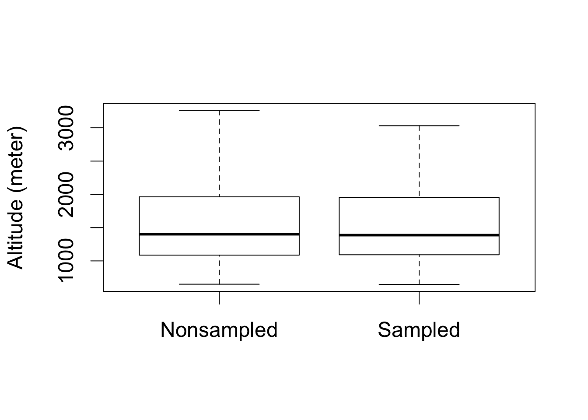
## boxplots for log population
boxplot(log(population) ~ village.surveyed, data = afghan.village,
ylab = "log population", names = c("Nonsampled", "Sampled"))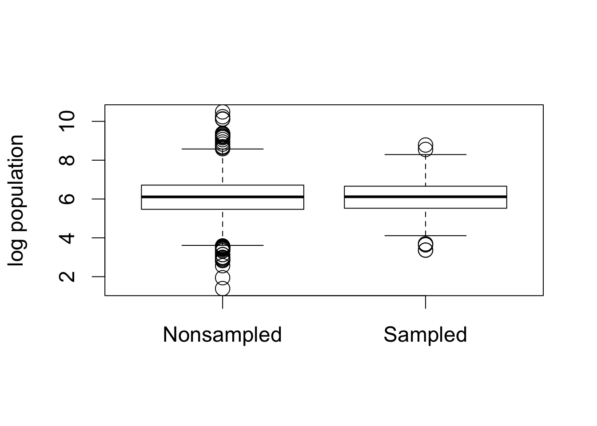
Section 3.4.2: Nonresponse and Other Sources of Bias
tapply(is.na(afghan$violent.exp.taliban), afghan$province, mean)## Helmand Khost Kunar Logar Uruzgan
## 0.030409357 0.006349206 0.000000000 0.000000000 0.062015504tapply(is.na(afghan$violent.exp.ISAF), afghan$province, mean)## Helmand Khost Kunar Logar Uruzgan
## 0.016374269 0.004761905 0.000000000 0.000000000 0.020671835mean(afghan$list.response[afghan$list.group == "ISAF"]) -
mean(afghan$list.response[afghan$list.group == "control"])## [1] 0.04901961table(response = afghan$list.response, group = afghan$list.group)## group
## response control ISAF taliban
## 0 188 174 0
## 1 265 278 433
## 2 265 260 287
## 3 200 182 198
## 4 0 24 0Section 3.6: Summarizing Bivariate Relationships
Section 3.6.1: Scatter Plot
data("congress", package = "qss")
## subset the data by party
rep <- subset(congress, subset = (party == "Republican"))
dem <- congress[congress$party == "Democrat", ] # another way to subset
## 80th and 112th congress
rep80 <- subset(rep, subset = (congress == 80))
dem80 <- subset(dem, subset = (congress == 80))
rep112 <- subset(rep, subset = (congress == 112))
dem112 <- subset(dem, subset = (congress == 112))
## preparing the labels and axis limits to avoid repetition
xlab <- "Economic liberalism/conservatism"
ylab <- "Racial liberalism/conservatism"
lim <- c(-1.5, 1.5)
par(cex = 1.5)
## scatterplot for the 80th Congress
plot(dem80$dwnom1, dem80$dwnom2, pch = 16, col = "blue",
xlim = lim, ylim = lim, xlab = xlab, ylab = ylab,
main = "80th Congress") # democrats
points(rep80$dwnom1, rep80$dwnom2, pch = 17, col = "red") # republicans
text(-0.75, 1, "Democrats")
text(1, -1, "Republicans")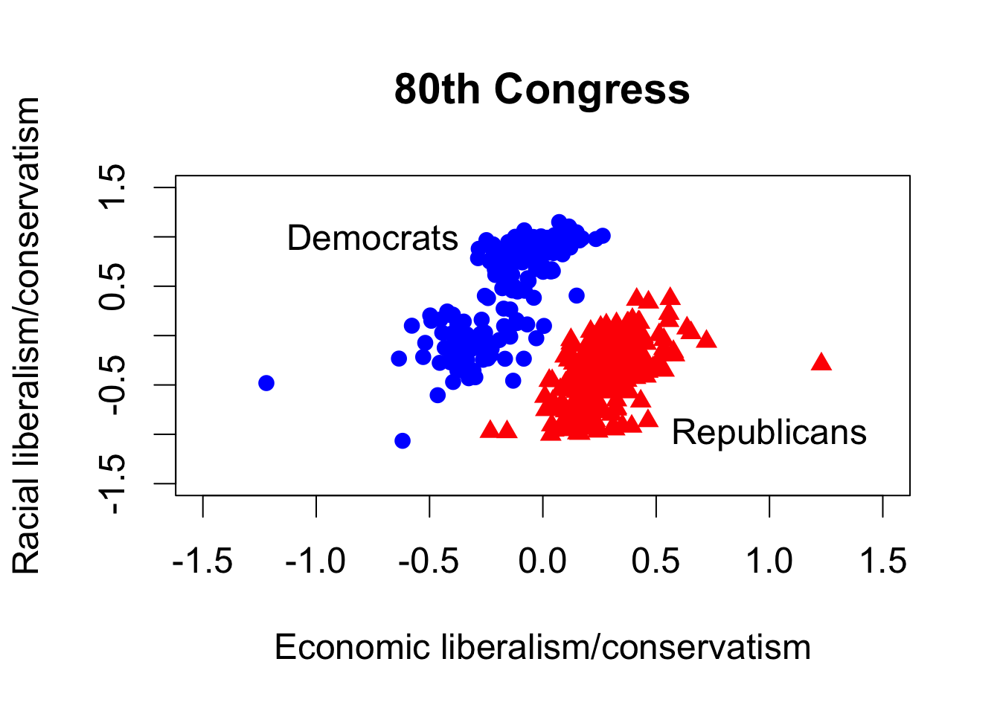
## scatterplot for the 112th Congress
plot(dem112$dwnom1, dem112$dwnom2, pch = 16, col = "blue",
xlim = lim, ylim = lim, xlab = xlab, ylab = ylab,
main = "112th Congress")
points(rep112$dwnom1, rep112$dwnom2, pch = 17, col = "red")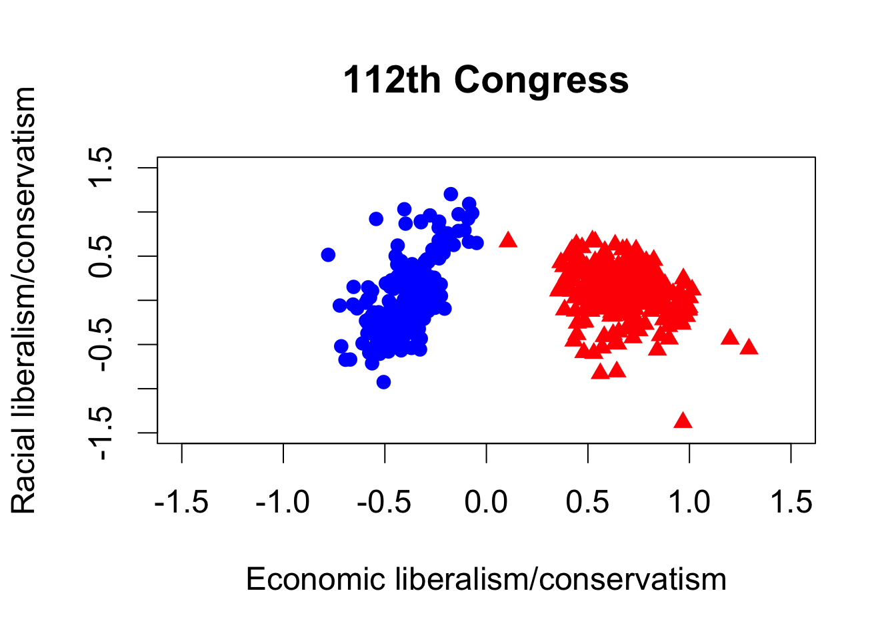
## party median for each congress
dem.median <- tapply(dem$dwnom1, dem$congress, median)
rep.median <- tapply(rep$dwnom1, rep$congress, median)
par(cex = 1.5)
## Democrats
plot(names(dem.median), dem.median, col = "blue", type = "l",
xlim = c(80, 115), ylim = c(-1, 1), xlab = "Congress",
ylab = "DW-NOMINATE score (1st dimension)")
## add Republicans
lines(names(rep.median), rep.median, col = "red")
text(110, -0.6, "Democratic\n Party")
text(110, 0.85, "Republican\n Party")
Section 3.6.2: Correlation
par(cex = 1.5)
## Gini coefficient data
data("USGini", package = "qss")
## time-series plot for partisan difference
plot(seq(from = 1947.5, to = 2011.5, by = 2),
rep.median - dem.median, xlab = "Year",
ylab = "Republican median -\n Democratic median",
main = "Political polarization")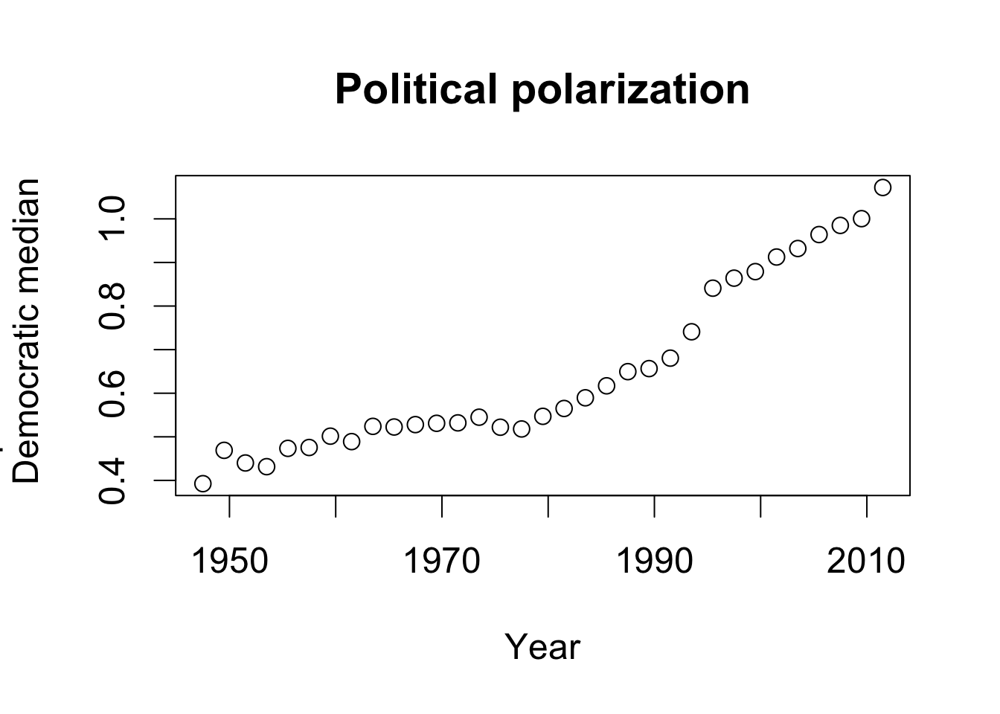
## time-series plot for Gini coefficient
plot(USGini$year, USGini$gini, ylim = c(0.35, 0.45), xlab = "Year",
ylab = "Gini coefficient", main = "Income inequality")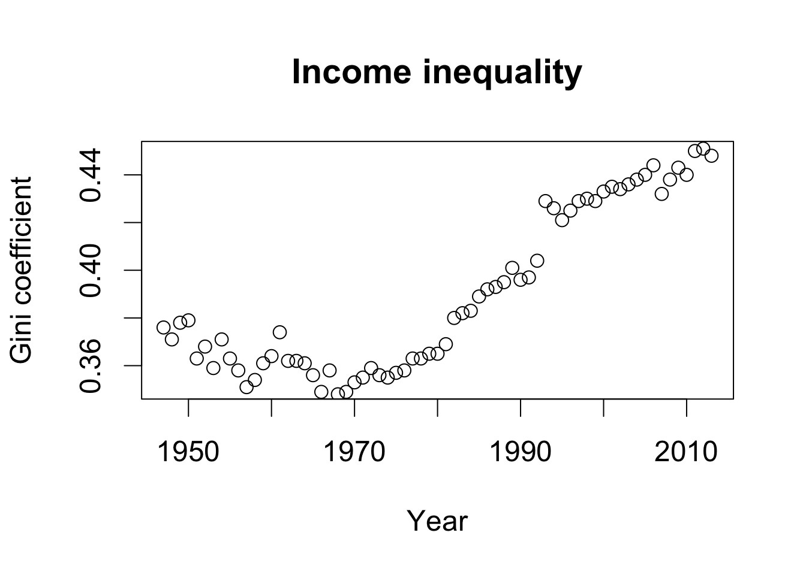
cor(USGini$gini[seq(from = 2, to = nrow(USGini), by = 2)],
rep.median - dem.median)## [1] 0.9418128Section 3.6.3: Quantile-Quantile Plot
par(cex = 1.5)
hist(dem112$dwnom2, freq = FALSE, main = "Democrats",
xlim = c(-1.5, 1.5), ylim = c(0, 1.75),
xlab = "Racial liberalism/conservatism dimension")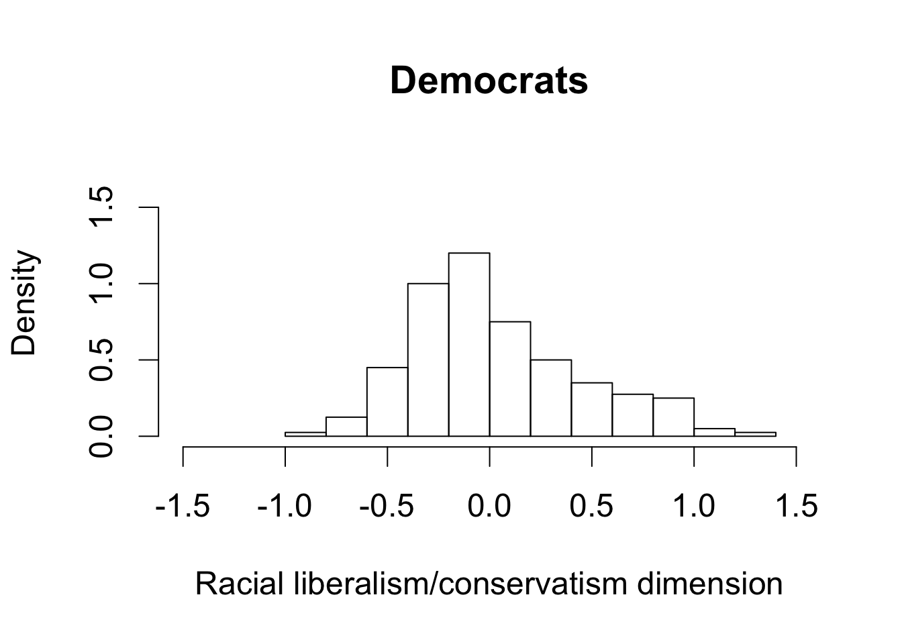
hist(rep112$dwnom2, freq = FALSE, main = "Republicans",
xlim = c(-1.5, 1.5), ylim = c(0, 1.75),
xlab = "Racial liberalism/conservatism dimension")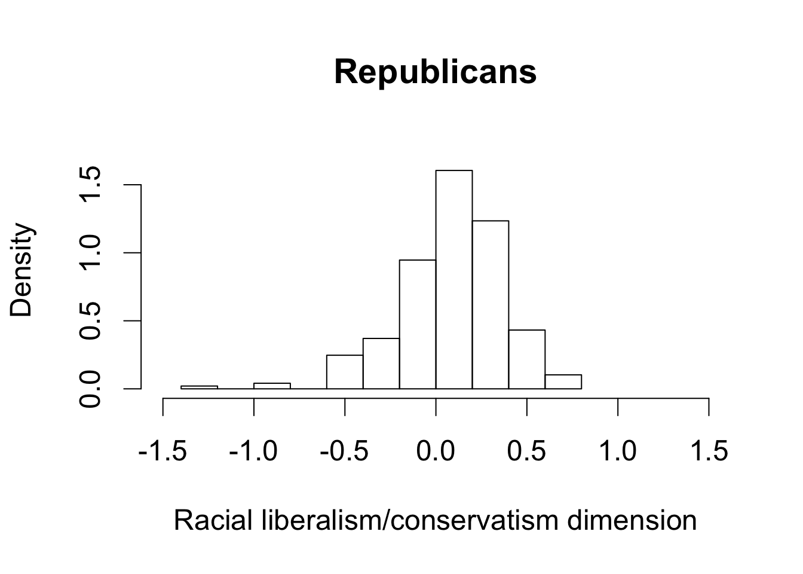
par(cex = 1.5)
qqplot(dem112$dwnom2, rep112$dwnom2, xlab = "Democrats",
ylab = "Republicans", xlim = c(-1.5, 1.5), ylim = c(-1.5, 1.5),
main = "Racial liberalism/conservatism dimension")
abline(0, 1) # 45 degree line
Section 3.7: Clustering
## 3x4 matrix filled by row; first argument take actual entries
x <- matrix(1:12, nrow = 3, ncol = 4, byrow = TRUE)
rownames(x) <- c("a", "b", "c")
colnames(x) <- c("d", "e", "f", "g")
dim(x) # dimension## [1] 3 4x## d e f g
## a 1 2 3 4
## b 5 6 7 8
## c 9 10 11 12## data frame can take different data types
y <- data.frame(y1 = as.factor(c("a", "b", "c")), y2 = c(0.1, 0.2, 0.3))
class(y$y1)## [1] "factor"class(y$y2)## [1] "numeric"## as.matrix() converts both variables to character
z <- as.matrix(y)
z## y1 y2
## [1,] "a" "0.1"
## [2,] "b" "0.2"
## [3,] "c" "0.3"## column sums
colSums(x)## d e f g
## 15 18 21 24## row means
rowMeans(x)## a b c
## 2.5 6.5 10.5## column sums
apply(x, 2, sum)## d e f g
## 15 18 21 24## row means
apply(x, 1, mean)## a b c
## 2.5 6.5 10.5## standard deviation for each row
apply(x, 1, sd)## a b c
## 1.290994 1.290994 1.290994Section 3.7.2: List in R
## create a list
x <- list(y1 = 1:10, y2 = c("hi", "hello", "hey"),
y3 = data.frame(z1 = 1:3, z2 = c("good", "bad", "ugly")))
## 3 ways of extracting elements from a list
x$y1 # first element## [1] 1 2 3 4 5 6 7 8 9 10x[[2]] # second element## [1] "hi" "hello" "hey"x[["y3"]] # third element## z1 z2
## 1 1 good
## 2 2 bad
## 3 3 uglySection 3.7.3: The k-Means Algorithm
names(x) # names of all elements## [1] "y1" "y2" "y3"length(x) # number of elements## [1] 3dwnom80 <- cbind(congress$dwnom1[congress$congress == 80],
congress$dwnom2[congress$congress == 80])
dwnom112 <- cbind(congress$dwnom1[congress$congress == 112],
congress$dwnom2[congress$congress == 112])
## kmeans with 2 clusters
k80two.out <- kmeans(dwnom80, centers = 2, nstart = 5)
k112two.out <- kmeans(dwnom112, centers = 2, nstart = 5)
## elements of a list
names(k80two.out)## [1] "cluster" "centers" "totss" "withinss"
## [5] "tot.withinss" "betweenss" "size" "iter"
## [9] "ifault"## final centroids
k80two.out$centers## [,1] [,2]
## 1 0.14681029 -0.3389293
## 2 -0.04843704 0.7827259k112two.out$centers## [,1] [,2]
## 1 -0.3912687 0.03260696
## 2 0.6776736 0.09061157## number of observations for each cluster by party
table(party = congress$party[congress$congress == 80],
cluster = k80two.out$cluster)## cluster
## party 1 2
## Democrat 62 132
## Other 2 0
## Republican 247 3table(party = congress$party[congress$congress == 112],
cluster = k112two.out$cluster)## cluster
## party 1 2
## Democrat 200 0
## Republican 1 242## kmeans with 4 clusters
k80four.out <- kmeans(dwnom80, centers = 4, nstart = 5)
k112four.out <- kmeans(dwnom112, centers = 4, nstart = 5)
par(cex = 1.5)
## plotting the results using the labels and limits defined earlier
plot(dwnom80, col = k80four.out$cluster + 1, xlab = xlab, ylab = ylab,
xlim = lim, ylim = lim, main = "80th Congress")
## plotting the centroids
points(k80four.out$centers, pch = 8, cex = 2)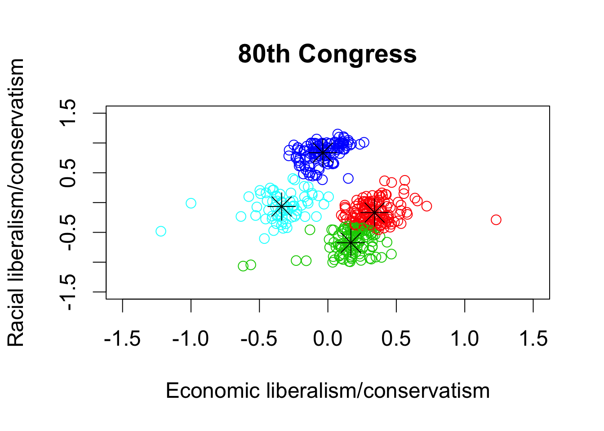
## 112th congress
plot(dwnom112, col = k112four.out$cluster + 1, xlab = xlab, ylab = ylab,
xlim = lim, ylim = lim, main = "112th Congress")
points(k112four.out$centers, pch = 8, cex = 2)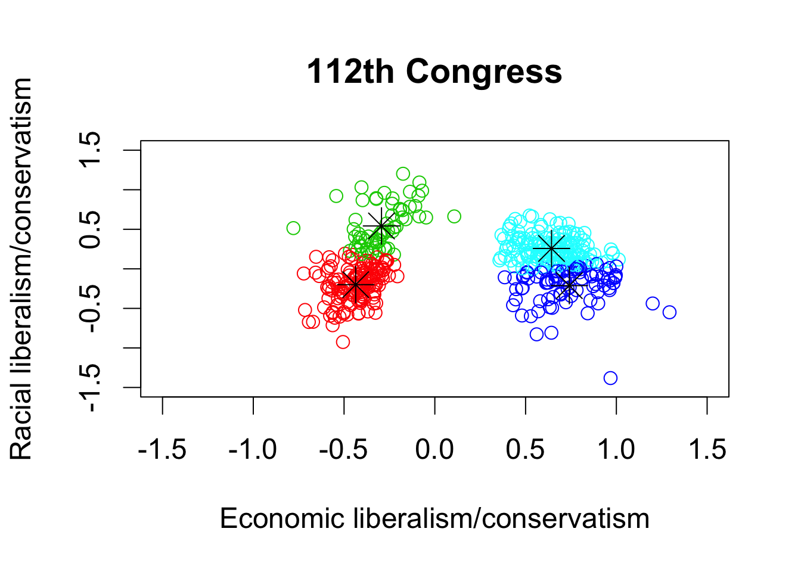
palette()## [1] "black" "red" "green3" "blue" "cyan" "magenta" "yellow"
## [8] "gray"